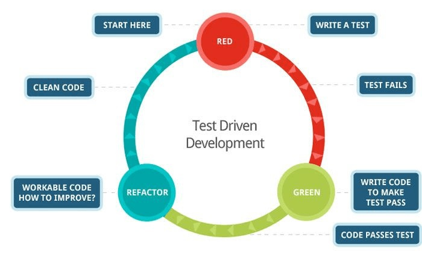

TDD, My hopes
6 min read - May 7nd, 2016
As you might have noticed in my “Learning path” article, the first part of my studies is focused on TDD. For a couple of months, I dedicated my time to the practice of this discipline, and you might have wondered why
. Why such emphasis on something that, in the end, is only a practice, and is not really related to any architectural concepts of clean object oriented code?
Now, I know that TDD can be quite controversial. Some live by its principles, some are more dubitative let’s say. My goal with this article is not to convince you that TDD is the way to go. I just want to lay down the benefits I got from it.
I’m not here for the hype, I really have my hopes for TDD. Will it live up to my expectations?
##Tests are boring, TDD is amazing
We all have that feeling that writing tests is a boring, repetitive and not productive task. Yet when I practice TDD, never have I had this sentiment of uselessness. In fact, it’s quite the opposite. It feels amazing!
At the very beginning of my journey in January, I had 2 major issues. They were the 2 reasons preventing me to efficiently study advanced concepts of Object Oriented programming.
- Lack of confidence in my code
- Non-productivity, or at least the feeling thereof.
TDD solved both these problems for me.
##Imperfectionphobia
If you’ve read my “About me” section. You may see what drives me in this adventure. I always wanted to do things the right way. The problem comes with the fact that: In programming, I could try my whole life trying to do something the right way. Because there is never such thing. A right way among many others, for sure, but a single absolute truth . . .
And yet, as a fool, I was trying to reach it.
#####The result ?
For every line of code I would write I would spend hours reading StackOverflow posts, blog articles, source code, to try and identify what the line I’ve just written fundamentally does.
. . .
Ok, maybe not every line. But you’ve got the idea.
The problem never was the time spent reading about different problems and solutions. I learned a lot doing that, and actually keep doing it on a daily basis. No, the problem is that most of the times I was afraid of missing the point. I was afraid that the piece of code I’ve just written would fail miserably in an edge case I wouldn’t have covered.
###The edge case monster So what would happen is, I would:
- Write a fairly simple piece of code
- Check if there is a better way to do it
- Alternatively, check if there isn’t something I misunderstood
- Implement my latest findings
- Iterate over this list
Without any kind of damage control you can imagine how this would look like after even a few iterations. Big, ugly, and ready to explode.
No big deal! At this point, I would start over with all my newly acquired knowledge. I would do something simple again. . . . Except then I would:
- Quickly check I didn’t forget anything
- Add what I inevitably forgot
- . . . Iterate over this list
Yep, that wasn’t helping. But I didn’t know better.
Then I heard about TDD.
##Red, green, refactor

The basic principle of TDD is fairly simple. It’s 3 simple steps: Red, Green, Refactor.
- First, write a failing test.
- Then write the single easiest piece of code that would make the test pass
- Finally refactor to make the code cleaner.
Don’t be fooled by the apparent naïveté of this process. Its simplicity is the very thing that makes it so powerful.
To know more about the fundamentals of TDD I can only recommend this great book Test-Driven Development by Example by the “rediscoverer” of TDD, Kent Beck
Let’s directly skip to the last and most important part of the cycle: Refactor. Writing the failing test and then making it pass, are a great way to get some fast progress and get going at a stable rhythm. But the real magic of TDD is in the refactor phase.
The result of the first 2 phases is a Test Harness that ensure the consistency of a method, class, or system. They create a set of tests that guarantee that when they are passing, no matter the changes in the implementation, the system behaves as originally designed.
Since, with TDD, tests are not written to validate an existing behavior, but rather constitute the pure description of how a system was intended to behave. That means: if all the tests are passing, the system irrevocably realize the intended behavior.
And that is when I am talking about Magic. Because, pushing one step further, being covered by a test harness means that I can refactor AT WILL without the fear of breaking anything.
###The real of creativity This maybe the most important reason for my interest in TDD. Once the Test Harness is in place and refactoring is safe, we enter the realm of creativity.
This is where I can try different approaches for the same problem, experiment with design patterns. Basically, this is where all my learning happen.
######In the end for me the TDD cycle looks more like this

In this test-covered Heaven, everything is beautiful. But there is one thing that could quickly turn it into Hell. Breaking too many tests while refactoring. When this happens, reaching the green state again can be a Nightmare. That is why the second part of my studies is focused on incremental refactoring. I might do an article on the topic at some point in the future.
###The era of Quantify self The other problem I mentioned I had before my discovery of TDD was my lack of productivity. Indeed as explained in the previous section, I would waste a lot of time looking into deeper and deeper options, only to realized I was lost in the end. TDD definitely solved that.
But that’s not it! If you know me in real life, you know I love to track everything. I track my activity, my food, my work hours, my learning progress (you’re reading it). Why? Because it makes me more motivated, more productive. By abstracting away the notion of progress into a tracking system, and removing it from my thoughts. I can fully focus on my work! And then when necessary, and only then, I can take a look back to do a retrospective analysis backed by the collected data.
Where am I getting at? Well, the Test Harness created by TDD, not only provide me with a fantastic safety net for refactoring, but also is a physical indicator of progress towards the complete system.
Defining the behavior of a system in terms of tests, allows for a very fine tracking of progress towards the realization of the project. And again this might just be only me, but personally, I cannot find anything else more motivating than that.
###A Flawless system
Now am I saying that TDD by itself produces flawless systems? Absolutely not! But what I am saying is that if the test harness is here and enable refactoring at will. Then, a bug in the software, translate into writing a new failing test.
Doing so further specify the behavior of our piece of software, including its behavior in specific edge cases.
Then, the TDD process kicks in, a so called quick-fix is written and with no further delay refactored into proper clean code, thus reducing the growth of technical debt.
#NoSilverBullet
After reading this article I’m sure you’re thinking TDD is amazing and want to get started right away. Well if that’s really the case, great! Take a look at my reading list, to get some resources on the topic.
However nothing ever is perfect, and the path to mastering TDD is a long and treacherous journey. If you start practicing TDD with no prior knowledge you will find that practice is, as always, trickier than theory. Starting to write tests first requires a certain period of adaptation to actually getting any benefits from it.
Furthermore, I mentioned earlier that breaking too many tests at once while refactoring can transform the TDD experience into a nightmare. This could also come from a Test-Harness modeling the behavior of the system in a way that’s too close to its actual implementation. There is a lot of debates about white box testing vs black box testing, Classicist vs Mockist, Chicago vs London style, Inside out vs Outside in, Depth-first vs Breath first . . . . . A LOT of debates, and opinions.
But my point is not to enter those details. I just wanted to share with you why I’m so enthusiastic about a testing technique, and why I wish I could use it more often.
###An ongoing journey Yes, I wish I could use TDD more often. What that means is that, there still is some situations, where I simply do not see yet how apply TDD. I’m convinced that it is possible, I just don’t yet know how. I guess that’s why I’m the professional beginner ;) Therefore, I will continue to post about TDD, but most likely in an open article format.
That concludes this very long article. Thank you for keeping reading until this point. You’re the best ;)
Now it’s your turn, I would love to hear your thoughts on TDD. Have you tried it, do you practice it on a daily basis? How did that work out for you? Let me know what you think in the comment section below.
— The Professional Beginner